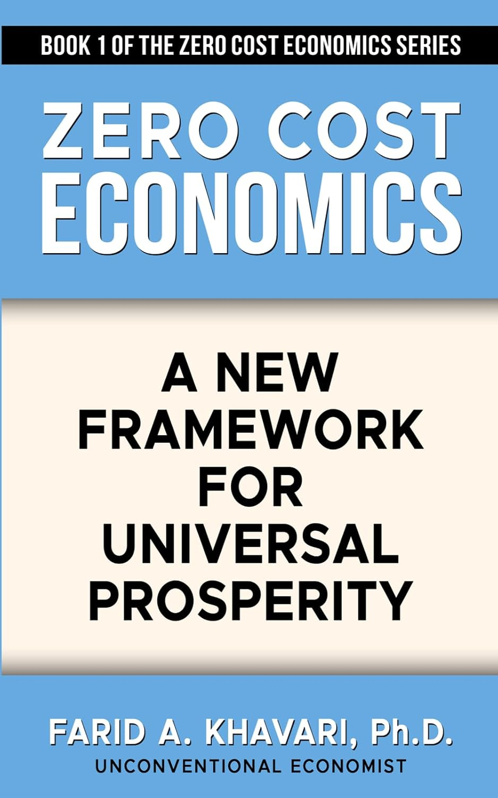

What do you actually keep?
Higher earnings alone cannot explain a household’s security. Essential expenses shape how much income remains.
What changes when essential costs stop consuming the future? Explore one question at the heart of Dr. Khavari’s work: could better systems leave families with more lasting economic security?
monthly money remaining
monthly money remaining*
Difference in cumulative money remaining · current arrangement = $0 reference
Higher earnings alone cannot explain a household’s security. Essential expenses shape how much income remains.
Khavari argues for policy changes that freeze, reduce, or sometimes eliminate costs while improving living standards.
This example follows one cost. His work asks how housing, energy, finance, and other systems could support broader prosperity.

Go beyond one household scenario. Discover Dr. Khavari’s case for rethinking recurring costs, economic security, and shared prosperity in Zero Cost Economics: A New Framework for Universal Prosperity.
Concept inspired by Khavari’s original explanation of cost reduction and purchasing power. Scenario values and interface are an independent illustration. The model shows cash-flow differences, not proof of an economy-wide outcome.